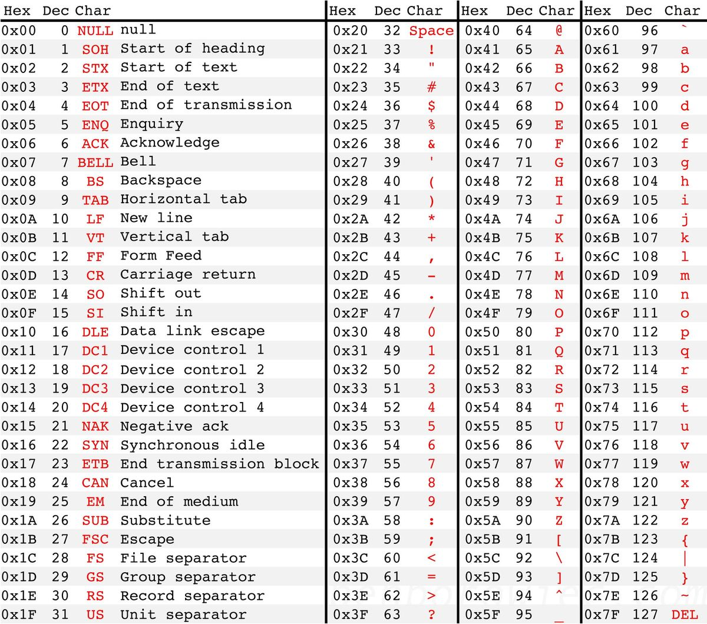
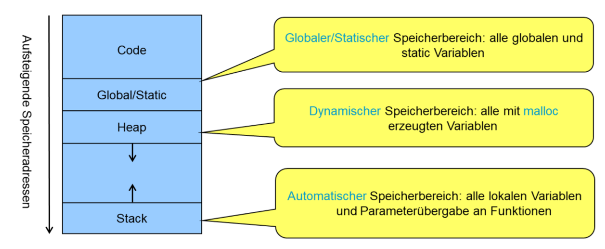

C-Sprache
Typen
| Typ | Bytes | |
|---|---|---|
| char | 1 Byte | |
| int | 4 Bytes | |
| float | 4 Bytes | |
| double | 8 Bytes | |
| Typ | Std-Typ | Bytes | Wertebereich |
|---|---|---|---|
| char | int8_t | 1-Byte/8-Bits | -128 bis 127 |
| unsigned char | uint8_t | 1-Byte/8-Bits | 0 bis 255 |
| short | int16_t | 2-Bytes/16-Bits | -32'768 bis 32'767 |
| unsigned short | uint16_t | 2-Bytes/16-Bits | 0 bis 65'535 |
| int | int32_t | 4-Bytes/32-Bits | \(-2^{31}\) bis \(2^{31}-1\) |
| unsigned int | uint32_t | 4-Bytes/32-Bits | \(0\) bis \(2^{32}-1\) |
| long | int64_t | 8-Bytes/64-Bits | \(-2^{63}\) bis \(2^{63}-1\) |
| unsigned long | uint64_t | 8-Bytes/64-Bits | \(0\) bis \(2^{64}-1\) |
| long double | 10-Bytes/80-Bits | \(-1.2\cdot 10^{4932}\) bis \(1.2\cdot 10^{4932}\) |
- Eine Dezimalzahl im Code wird als
signed intinterpretiert - eine oktal und hexadezimal Zahl werden als
unsigned intinterpretiert - Wenn eine Zahl zu gross für einen
intist, wird sie alslongabgespeichert - mit
Loderlnach einer Zahl alslonginterpretiert - mit
LLoderllwird eine Zahl alslong longinterpretiert - wird
Uoderuwird eine Zahl alsunsigned intinterpretiert
Preprocessor
#define
Mit #define wird eine Variable definiert, welche während der Kompilierzeit ersetzt werden.
Der Syntax ist der folgende: #define NAME <value>
Ein Macro darf zusätzlich auch Parameter enthalten. Diese Parameter haben keinen Typ, wie z.B. #define circleArea(R) (3.1415*(R)*(R))
Main
Die Main-Methode in C hat eine der folgenden formen:
Definitionen
static-Variable
Eine static variable ist nur Sichtbar im definierten C File. Zusätzlich dazu wird die Variable im Daten-Header in der Memory gespeichert.
Wenn eine statische Variable in einer Methode definiert wird, behaltet sie über mehrere Aufrufe ihren Wert.
In diesem Beispiel behaltet maxValue den Wert, auch wenn max mehrmals aufgerufen wird. Der Initialwert wird nur einmal gesetzt.
Register-Variabeln
Der Compiler versucht die Variable in einem Register zu speichert. Dies wird heute nicht mehr verwendet, da der Compiler dies selbst sehr gut optimieren kann.
Extern-Variabeln
Der Compiler geht davon aus, dass die Variable in einem anderen File definiert ist.
Auto-Variabeln
Die Variable wird auf dem Stack gespeichert. Dies wird heute nicht mehr verwendet, da der Compiler dies selbst optimieren kann.
Konstante
// ein konstanter Pointer zu einer int-Variable
int * const i1;
// ein Pointer zu einer konstanter int-Variable
const int * i2;
// ein konstanter Pointer zu einer konstanter int-Variable
const int * const i3;
// Ausnahme bei typedef Pointers
typdef int * int_pntr;
// ein konstanter Pointer zu einer variablen int-Variable
const int_pntr i4;
// das selbe, wie oben
int_pntr const i5;
Typ-Alias
Enum
Mit enum week {Monday, Tuesday, Wendsday}; kann ein neues Enum erstellt werden. Wenn das Enum ohne Typedef erstellt wurde, kann es mit enum week verwendet werden (enum week weekday_name;). Wenn man dafür zu schreibfaul ist, kann mit typeder enum week {Monday, Tuesday, Wendsday} week_t; ein Typalias week_t erstellt werden, welcher anstatt enum week verwendet werden kann.
Funktionen als Variable
Die Funktion void logger(char * msg) kann in der Variable mit der Definition void (*out)(char *). Sobald zwei Klammern in der Definition einer Variablen stehen, geht es meistens um eine Funktion.
Die Zuweissung kann mit out = &logger oder auch out = logger zu gewiessen weden. Dabei machen die beiden Zuweissungen dasselbe. Der Compiler ist beim zweiten schlau genug, die Adresse der Funktion zu speichern.
(*out)("Hello") oder out("Hello") machen beide dasselbe: Sie rufen die Funktion in out aus. Der Compiler automatisch dereferenziert das zweite Beispiel.`
Mit typedef void (*logger_fp_t)(char*) kann ein Typalias für eine Funktion erstellt werden. Danach kann logger_fp_t als Typ verwendet werden (logger_fp_t logger_fun = logger).
Arrays
Ein Array ist ein Datenblock im Speicher, welcher kontinuierlich ist. Der Variabelnnamen eines Arrays (ohne Klammern), ist ein Pointer und kann zu einem Pointer zu gewissen werden: int arr[4]; int* arrPointer = arr;
Ein Array kann folgendermassen erstellt werden;
int data[100]- das Array wird alloziert, aber nicht initialisiertint data[100] = {1}- das Array wird alloziert, das erste Element wird1und der Rest auf0(nurint data[] = {}ist ein Compilerfehler)int data[] = {1, 2}- Ein neues Array mit der Länge 2 und den Elementen1und2
Mit data[7] kann auf den 7. Wert zu gegriffen werden. Es gibt C typischerweisse kein Check, ob das Array genügend gross ist.
Ein Konstantes Array (const int data[100]) kann nicht modifiziert wird. Dies wird vom Compiler überprüft.
Wenn ein Array als Parameter übergeben wird, wird der Pointer zum Startwert übergeben. Auf der Funktionsseite würde man es folgendermassen schreiben:
In der Funktion weiss man nicht, wie lange das Array ist (sizeof(data) gibt die Grösse des Pointers des Arrays, wenn es als Parameter übergeben wird).
Länge Tricks bei Arrays
-
Wenn das Array im selben Block alloziert wurde, kann
sizeof(data)/sizeof(data[0])die Grösse errechnet werden -
Die Länge wird als Parameter ebenfalls mitgegeben
-
Es gibt ein Sentry Wert (wie
\0bei Strings/char Arrays)
Arrays vergleichen
Mit a == b , wenn a und b ein Arrays ist, vergleicht die Start-Adressen des Arrays, nicht die Elemente selbst. Für "normale" Arrays gibt es keine standardt Methode, welche der Inhalt von Arrays vergleicht. Für String gibt es int strcomp(char *s1, char *s2), welche 0 zurück gibt, wenn die Strings gleich sind, -1, wenn s1 kleiner ist als s2 und 1, wenn s1 grösser als s2 ist.
Mehrdimensionale Arrays
In C können Mehrdimensionale Arrays erstellt. Diese können "normal" darauf zugegrifen werden.
Strings
Strings in C sind Char-Arrays, welche am Ende ein \0 haben. Dabei können ASCI-Zeichen (nicht UTF-8) in einem String stehen.
char hello1[] = "hello, world"; // Array mit 13 Zeichen
char hello2[13] = "hello, world"; // Array mit 13 Zeichen
char hello3[14] = "hello, world"; // Array mit 14 Zeichen. Am ende hat es zwei \0
char hello4[12] = "hello, world"; // Array mit 12 Zeichen, aber das \0 fehlt am ende
char hello5[13]; // Array mit 13 Zeichen. Wird nicht initialisiert
Wenn das \0 am ende eines Strings fehlt, werden die String-Funktionen einfach weiter lesen, bis ein \0 im Speicher gefunden wird. Meistens führt dies zu einem Crash.
- mit
strncpy()undstrncat()können mit String
String-Literale wird in Read-Only Teil des Programmes gespeichert und kann daher nicht modifiziert werden. Ein String-Literal kann dazu benützt werden, ein char-Array zu erstellen, welches geändert werden kann.
char* str_literal = "test";
str_literal[0] = 'H'; // undefined behaviour. str_literal points to read-only memory
char[] str_arr = "test"; // copies the string_literal to the array
str_arr[0] = 'H'; // works

Gross-/Kleinbuchstaben
'a' & '_' == 'A'; // 0b0110 0001 & 0b0101 1111 = 0b0100 0001
'A' & '_' == 'A';
'A' | ' ' == 'a'; // 0b0100 0001 | 0b0010 0000 = 0b0110 0001
'a' | ' ' == 'a';
Pointers
int data[4];
int* pointer = data; // da data[] bereits ein Pointer ist, kann er direkt zugewissen werden
pointer++; // geht zur nächsten Addresse 4 Bytes weiter, da ein int 4 bytes lang ist
int value = *pointer; // mit *<pointerVar> wird der Pointer dereferenziert
int intVar = 1;
pointer = &intVar; // setzt die Adresse von intVar zu dem Pointer
*pointer = intVar; // setzt die Adresse von intVar zu dem Pointer
double **pointerZuPointer; // ein Meehrdimensionalen Pointer
double *pointer, notPointer; // erstellt ein Double-Pointer und ein Double-Variable
int i2 = dataPointer->nr; // dereferenziert den Pointer zu einem Struct und gibt nr zurück
Ein Pointer kann mit int* data erstellt werden.
Ein Pointer ist eine Adresse, mit welcher gerechnet werden kann. Um den Wert eines Pointers zu bekommen, muss er dereferenziert werden. Dies kann mit *data bewerkstelligt werden.
Wenn man die Adresse einer Variable bekommen möchte, kann man diese mit &variable bekommen und z.B. einem Pointer zu weisen.
Ein Pointer kann man eine Adresse zu weissen (pointer = &variable), ebenfalls kann ein dereferenzierten Pointer zu gewissen werden (*pointer = variable). Beides funktioniert und bewerkstelligt dasselbe.
double *d1[20] ist ein Array von 20 Double-Pointers, hingegen double (*d2)[20] ist ein Pointer auf ein Array von Double-Elementen.
Presedenz von *
double *d1[20]; // ein Array von 20 Pointern auf Doubles
double (*d2)[20]; // ein Pointer auf ein Array von 20 Double Elemente
struct data {int nr;}
struct data *dataPointer, dataObj;
*dataPointer = dataObj;
int i1 = (*dataPointer).nr; // *dataPointer.nr würde dataPointer.nr dereferenzieren
int i2 = dataPointer->nr; // macht dasselbe, wie oben
Void-Pointers
Pointers haben immer einen Daten-Typ. Die einzige Ausnahme ist der void-pointer
NULL-Pointer
Der Pointer NULL (von stdio.h) ist ein Alias für die Adresse für 0 und heisst, dass der Pointer auf nichts zeigt. Er soll zur Dokumentation
Speicher allozieren
Wenn ein neues Objekt erzeugt wird (z.B. ein int, aber auch ein struct oder ein array), dann wird dies auf dem Stack gespeichert. Mit Methoden, wie malloc(size_t) können aber auch Daten auf dem Heap gespeichert werden.

| Methode | Erklärung |
|---|---|
void* malloc(size_t size) |
Alloziert speicher auf dem Heap |
void* calloc(size_t nsize, size_t size) |
|
void* realloc(void *ptr, size_t size) |
Setzt die Grösse des gegebenen Pointers auf die gegebene Grösse |
void free(void *ptr) |
Gibt allozierten Speicher an der gegebenen Adresse wieder frei |
Methoden
Funktions-Parameter
Standardmässig werden alle Parameter by value übergeben. Falls dies nicht gewollt ist, müssen Pointers verwendet werden.
const-Parameter
void write_int(const int a) bewirkt, dass a nicht in der Methode verändert werden kann.
Es ist natürlich erlaubt einen konstanten Pointer zu definieren (void write_char(const char *s)). Dabei kann der Pointer selbst (a = NULL), wie auch der Wert des Pointers (*a=5) nicht mehr geändert werden. Die konstante Variable darf nicht im linken Teil einer Zuweisung stehen.
Array Parameter
void write_array(int* a) ist dasselbe, wie void write_array(int a[]). In beiden Fällen weiss die aufgerufene Methode nicht, wie gross das Array a ist.
Auch bei Arrays können mit const ausgestatet werden (void array_method(const int a[]))
Bei Mehrdimensionalen Arrays müssen alle Dimensionen, ausser die erste, angegeben werden: void print_matrx(double matrix[][3]) oder print_matrix(double (*matrix)[3]).
Variable Anzahl Parameter
#include <stdarg.h>
int average(unsigned int anzahl, ...) {
va_list args;
int summe = 0;
va_start(args, anzahl);
// beginnt bei 1, da das 0. Argument `anzahl` ist
for(int i = 1; i <= anzahl; i++) {
summe += va_arg(args, int);
}
va_end(args);
return summe / anzahl;
}
Damit eine Funktion eine Variable Anzahl von Parameter benützten kann, muss stdarg.h inkludiert sein. Auf die Argumente kann mit der Struktur va_list zugegriffen werden. Diese Struktur muss mit va_start(va_list args, int numberOfArgs) initialisiert werden und mit va_end(va_list args) gelöscht werden. Der eigentliche Wert kann mit va_arg(va_list args, type) zugegriffen werden.
Rückgabe
Wenn ein Pointer zurück gegeben wird, muss die Variable auf dem Heap gespeichert sein.
Folgendes Beispiel würde nicht funktionieren
Fehler
- Stack-Overflow: Auf dem Stack hat es nicht mehr genügend platz
- Buffer-Overflow: Wenn ein Buffer (z.B. ein Array) über die Grenze überschrieben werden
Sichererers Programmieren
fgets()anstattgets()strncpy()undstrncat()anstattstrcpy()undstrcat()- Bei
malloc()immer überprüfen, ob der Speicher wirklich alloziert wurde
Header Files
In einem Header File stehen Funktions-Deklarationen (ohne Code), Structs, Enums, #define und weitere Definitionen. Diese können in einem *.c File includiert werden und der Compiler weiss, dass es diese Funktionen und Daten-Typen gibt.
Ein Headerfile sollte noch folgendes Boiler-Template haben:
Dies verhindert, dass das Headerfile zwei mal etwas definiert.
Binär Operatoren
| Op | Erklärung | Beispiel |
|---|---|---|
| & | und | 0101 & 0100 = 0100 |
| | | oder | 0101 & 0010 = 0111 |
| ^ | xor | 0101 ^ 0100 = 0001 |
| ~ | invert | ~0101 = 1010 |
| >> | right shift | 0100 >> 2 = 0001 |
| << | left shift | 0001 << 2 = 0100 |
Tipps
Variablen tauschen
Um zwei Variablen zu tauschen, kann drei mal geXORed werden: